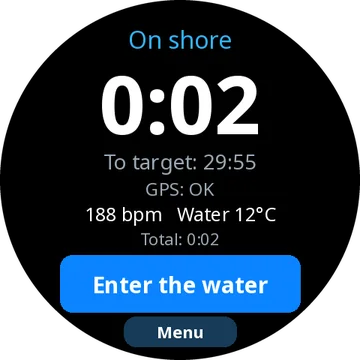
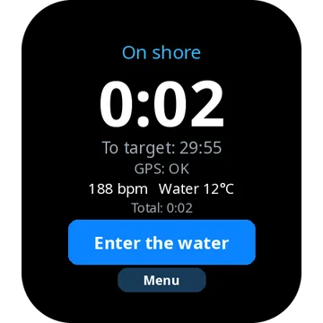

Cold Dip
Winterzwemmen, koude dips en saunasessies — getimed op je Amazfit-horloge, met hartslag, GPS en geschiedenis.
De app is ingediend en wordt beoordeeld. Als hij is goedgekeurd, opent deze knop de vermelding in de Zepp App Store.
7 dagen gratis proef met alle functies, daarna een eenmalige ontgrendeling van $4.99 via KiezelPay. Geen abonnement.
Hoe het werkt
Een korte blik op één sessie, van het startscherm tot hoe je je erna voelde.
Bekijk de sessie
- Open Cold Dip aan de wal. Stel de watertemperatuur in met − / + en druk op START.
- Aan de wal: de timer loopt terwijl je je klaarmaakt. Druk als je het water in gaat.
- In het water: tijd in het water, hartslag, watertemperatuur en GPS voor open water. Druk als je eruit stapt.
- Nadat je eruit stapt: tijd sinds je het water verliet en een aftelling voor opwarming (afterdrop).
- Sauna, als je die gebruikt: de app neemt de tijd van de ronde, daarna kun je terug het water in of afronden.
- Hoe je je voelde, 1–5, en sla op. Geschiedenis en persoonlijke records blijven op je horloge.
Schermafbeeldingen
Dezelfde sessie op een rond en een vierkant Amazfit-horloge.
Ronde horloges

Start 
Aan de wal 
In het water 
Nadat je eruit stapt 
Sauna 
Hoe je je voelde
Vierkante horloges

Start 
Aan de wal 
In het water 
Nadat je eruit stapt 
Sauna 
Hoe je je voelde
Prijs
De hele app is betaald — er is later geen aparte “Pro”-ontgrendeling.
- Een gratis proef van 7 dagen met alle functies, die start wanneer je de app voor het eerst opent.
- Daarna een eenmalige ontgrendeling van $4.99 via KiezelPay (kzl.io). Het horloge toont een code; je betaalt in de browser.
- Geen abonnement. De app ziet nooit je kaartgegevens. De betaling loopt via KiezelPay.
Ondersteunde Amazfit-horloges
Cold Dip draait op Zepp OS 3 (API 3.0) en nieuwer. De winkelvermelding toont de exacte modellen zodra Zepp het pakket heeft goedgekeurd.
- Balance Balance, Balance 2, Balance 2 XT, Balance 3, Balance Ultra
- Active Active, Active 2 (round and square), Active 3 Premium, Active Edge, Active Max
- T-Rex T-Rex 3, T-Rex 3 Pro, T-Rex Ultra, T-Rex Ultra 2
- Cheetah Cheetah (round and square), Cheetah Pro, Cheetah 2 Pro, Cheetah 2 Ultra
- GTR / GTS / Falcon GTR 4, GTS 4, Falcon
- Bip Bip 5 Unity, Bip 6, Bip Max
Bip 5 Unity heeft geen GPS. Profielen met een route tonen “zoeken naar GPS…”; de rest van de app werkt.
Niet ondersteund (ouder Zepp OS): GTR 3, GTS 3, GTS 4 Mini, GTR Mini, Bip 5 (het niet-Unity-model), T-Rex 2 en Band 7.
Privacy en weer
Er is geen account, geen analyse en geen reclame. Hartslag, GPS en je sessiegeschiedenis blijven op het horloge.
Als de telefoon verbonden is, komt het weer (luchttemperatuur, wind, omstandigheden) van MET Norway Locationforecast 2.0, gebruikt onder CC BY 4.0. Alleen een ruwe positie gaat naar api.met.no. Bronvermelding: © MET Norway (CC BY 4.0).